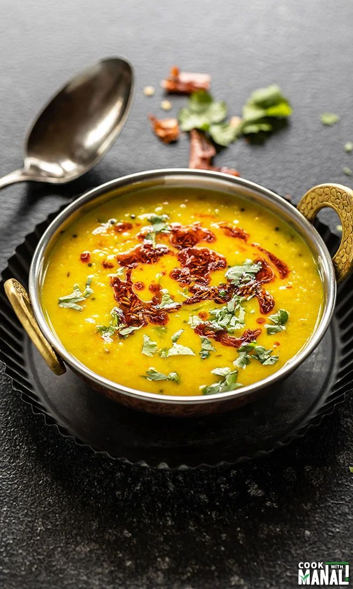

Dhal Tadka

PaÃs: India
Tipo: Vegana
Momento: Almuerzo/Cena
Duración: 40 min
Porciones: 4
🧂 Ingredientes
- 1 taza de lentejas rojas (200 g)
- 1 cebolla
- 2 cm de jengibre
- 1/2 taza de leche de coco (120 ml)
- 2 cucharaditas de curry
👨‍🍳 Pasos
- Cocinar lentejas hasta blandas
- Preparar sofrito de especias
- Mezclar todo y cocinar 15 min
- Servir con cilantro fresco